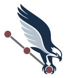
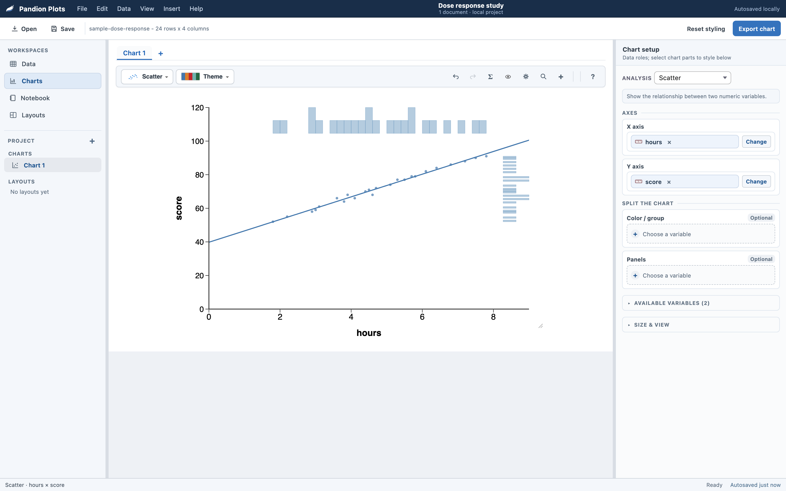
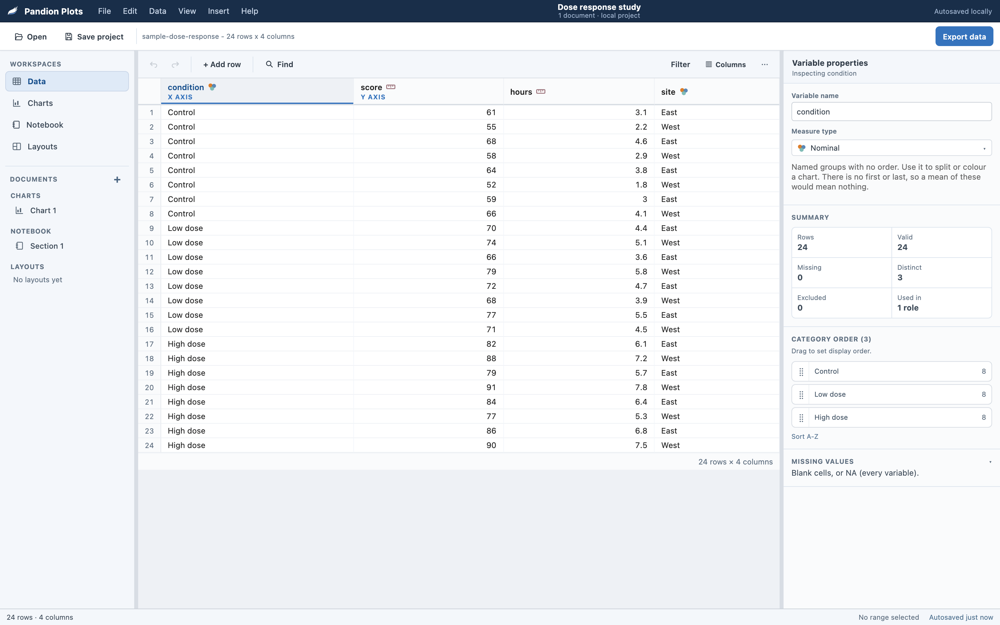
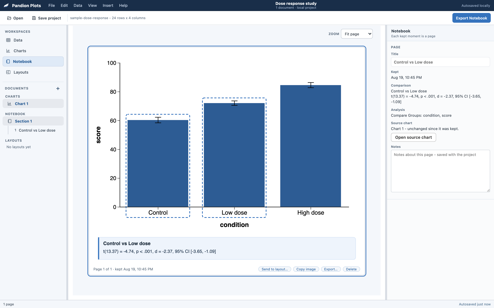
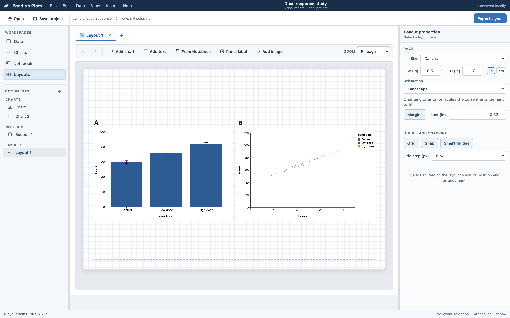

Pandion Plots
Pandion Plots
Clear statistical figures without the struggle.
Pandion Plots is a free, open-source graphing app for researchers, instructors, and students. Import your data, assign variables, and create a polished statistical figure without code. Click the chart to refine its labels, colors, axes, annotations, and layout. Everything runs locally, so your data stays on your computer.


Beyond the chart
A chart is only part of the work.
Pandion supports what comes before and after it. Organize and understand your data before you plot, keep a record of what you find as you go, then arrange finished charts into a polished figure for a paper, poster, or presentation.
A data workspace that knows what your variables are
Give each variable a measure type and the rest follows: which roles it can fill, which charts get suggested, and how its levels are ordered. Row counts, missing values, distinct values, and the roles a variable is currently used in stay visible while you work. Drag to reorder categories, exclude rows, or filter. A computed variable adds a formula column that recalculates whenever the data changes, and the quick-transform chips write the common ones for you: log10, ln, z-score, center, bin into 4, and recode.

A Notebook that keeps what you found
Right-click a chart and choose Keep to Notebook, or press Keep on a pinned comparison in the Statistics panel, and the moment lands as a page: the chart, its selection rings, and the statistics as one image. Each page carries when it was kept, your notes, and an honest verdict on whether its source chart has changed since. Kept pages never update themselves, which is the point. Organize them into sections, place one in a layout, or export the Notebook as a PDF, one page per kept moment.

Layouts for multi-panel figures
Arrange several charts on one page, label the panels, and add titles, notes, or images. Panels stay linked to the charts they came from, so an edit to a chart updates the figure. Snapping, smart guides, and page presets keep the arrangement tidy, and the finished figure exports as SVG, PNG, JPG, or vector PDF.

Get Pandion Plots
Use Pandion in the browser, on your desktop, or inside jamovi.
The browser, desktop, and portable versions share the same charting workflow and project format, so you can move your work between them. Inside jamovi, the same chart engine keeps plots alongside your analyses in the .omv file.
Current release 3.1.0, GPL-3.0. Release notes · User guide · How to cite
Desktop app
Run Pandion Plots on macOS or Windows for standard file associations, a familiar desktop workflow, and full offline access.
Choose your downloadInside jamovi
Use the same chart engine beside your jamovi analyses, with plots stored in the same .omv file. Opening an .omv in the browser or desktop app brings the data across (values, measure types, and category orders), not the analyses.
Download the modulePortable file
Download the entire app as one self-contained HTML file. Keep it on a USB drive, share it with students, or work offline. No installation is required.
Download HTML appIn your browser
Start immediately. Bring in data from a CSV, an Excel sheet, or a jamovi file and build charts without installing anything. Your current project is saved locally in your browser.
Open the browser appWhy Pandion
Built for research. Designed to teach.
Pandion Plots supports the full figure-making process: explore your data, check assumptions, run relevant statistics, and prepare a chart for a paper or presentation. When you want help, it explains results and design choices in plain language. Experienced users can stay focused on the work; newer users can follow the guidance.
In the lab
Statistics you can check
Comparisons, multiple-comparison corrections, and effect sizes are verified against R, with APA-style results ready to copy.
Figures ready to share
Build multi-panel layouts and export SVG, PNG, JPG, or vector PDF files, with captions included.
Private by design
Everything runs on your computer. No accounts, uploads, cloud processing, or telemetry.
In the classroom
Explanations when you need them
Get plain-language interpretations of tests, estimates, and intervals, with definitions in the built-in glossary.
Checks for common graph problems
Built-in checks flag truncated axes, difficult color choices, and other issues before you share a figure.
Help Me Choose
Select your variables and answer a few questions. Pandion recommends suitable chart types and explains why they fit.
Both experiences share the same foundation: considered defaults, direct-on-chart editing, and data imports from CSV, Excel, and jamovi files.